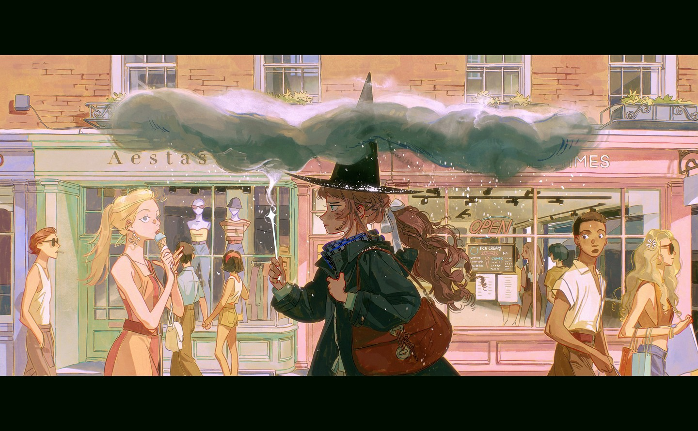
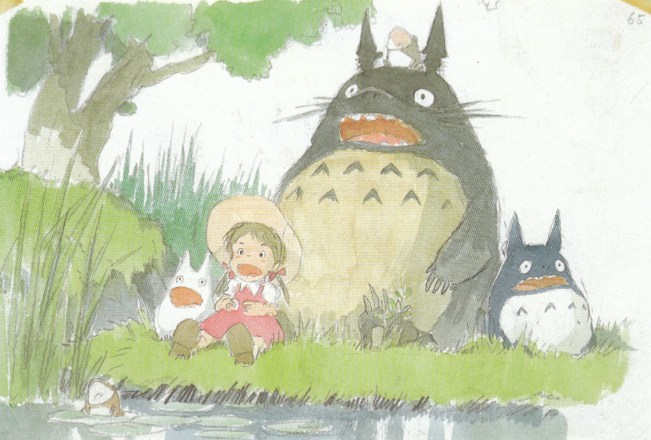

Where Inspiration Comes From
Every artist stands on the shoulders of those who came before, and my work is no different. Inspiration comes from many places – specific artists I admire, broader art movements, the storytelling in different media, and even everyday observations. This page explores some of the key influences that have shaped my artistic perspective and techniques. Understanding these influences helps show the conversation I'm trying to have with the art world and with myself.
It's a constantly evolving list, as new discoveries always spark new ideas!
Key Artists
Certain artists resonate deeply, either through their technical skill, their emotional depth, or their unique way of seeing the world. Studying their work helps me learn and pushes me to experiment.
Emily Xu (Instagram: @emilyamiao)
Emily Xu is a story artist at Walt Disney Animation Studios. Her work inspired me to go into animation, after discovering her animatics on YouTube. Looking into her other pages, I discovered more artiwork, like her Into The Spiderverse 2 artbook, that captivated me and really set my path for the future.

Source: Emily Xu's drawing representing her experience transitioning to warm weather.
Hayao Miyazaki
Miyazaki's ability to blend detailed natural environments with fantastical elements and complex characters has always captivated me. The way he uses color and light to convey emotion, especially in films like 'Spirited Away' or 'Princess Mononoke', encourages me to think more cinematically in my own illustrations. I admire the depth of his world-building and the subtle nuances in his character designs.

Other Inspirations
Sometimes inspiration comes from less direct sources!
Music
I often listen to music while drawing or painting. Music evokes strong moods, colors, or even narrative ideas that find their way into my art. In addition, a lot of songs I listen to come with animated music videos that sometimes gives me lots of inspiration. For example, the Japanese music artist, Eve, tends to have elaborate animations for each of his songs.
Friends
My friends were a big part of my influence. Many of them weren't artists, but they continued to encourage me to express myself and keep drawing.